What to do in Cape Town
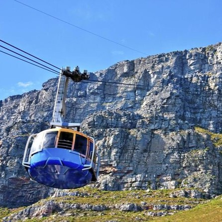
Table Mountain Adventure
Embark on a breathtaking hike or take the cable car to the summit of Table Mountain, where panoramic views of the city, ocean, and beyond await.
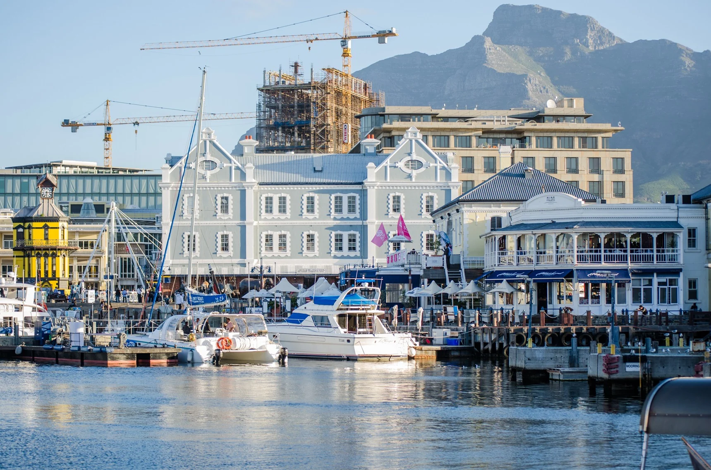
Explore the V&A Waterfront
Immerse yourself in the bustling V&A Waterfront, where you can shop at diverse boutiques, dine at waterfront restaurants, and enjoy cultural attractions like the Two Oceans Aquarium.
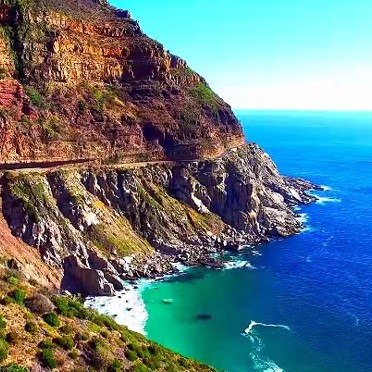
Cape Peninsula Scenic Drive
Drive along the scenic coastal roads of the Cape Peninsula, stopping at iconic spots such as Chapman's Peak Drive, Boulders Beach penguin colony, and the Cape of Good Hope.
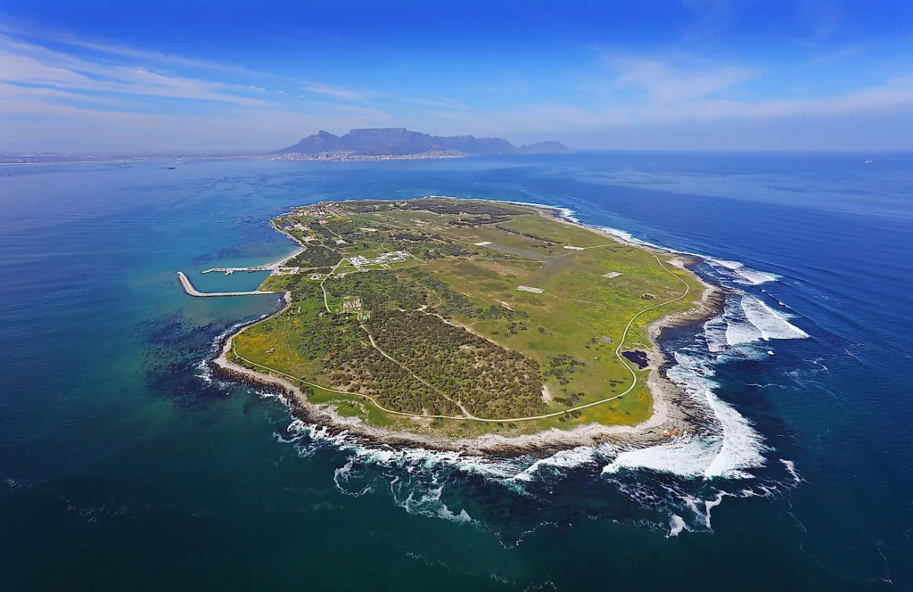
Robben Island Historical Tour
Delve into South Africa's history with a tour of Robben Island, a UNESCO World Heritage Site where Nelson Mandela was once imprisoned, and gain insights into the country's struggle for freedom.
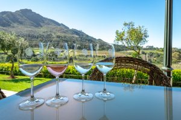
Wine Tasting in Constantia
Indulge your senses in the lush vineyards of Constantia, Cape Town's oldest wine-producing region. Enjoy wine tastings, cellar tours, and picturesque landscapes in this charming setting.
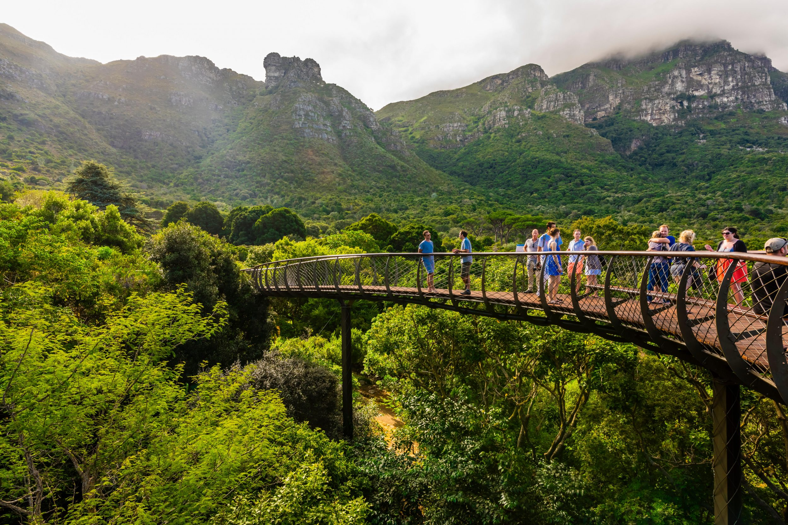
Kirstenbosch Botanical Gardens
Unwind in the serenity of Kirstenbosch Gardens, showcasing diverse plant life against the backdrop of Table Mountain. Relax with picnics, walking trails, and seasonal concerts.
Book a tour today!
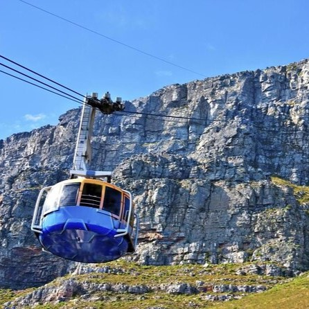
Table Mountain Adventure
Table Mountain Adventure
Embark on a breathtaking hike or take the cable car to the summit of Table Mountain, where panoramic views of the city, ocean, and beyond await.
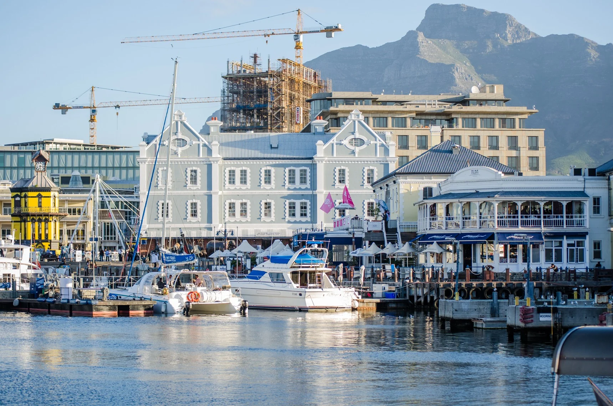
Explore the V&A Waterfront
Immerse yourself in the bustling V&A Waterfront, where you can shop at diverse boutiques, dine at waterfront restaurants, and enjoy cultural attractions like the Two Oceans Aquarium.
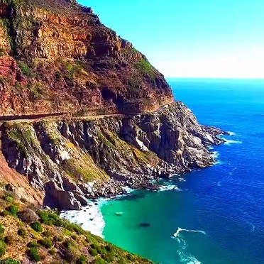
Cape Peninsula Scenic Drive
Drive along the scenic coastal roads of the Cape Peninsula, stopping at iconic spots such as Chapman's Peak Drive, Boulders Beach penguin colony, and the Cape of Good Hope.
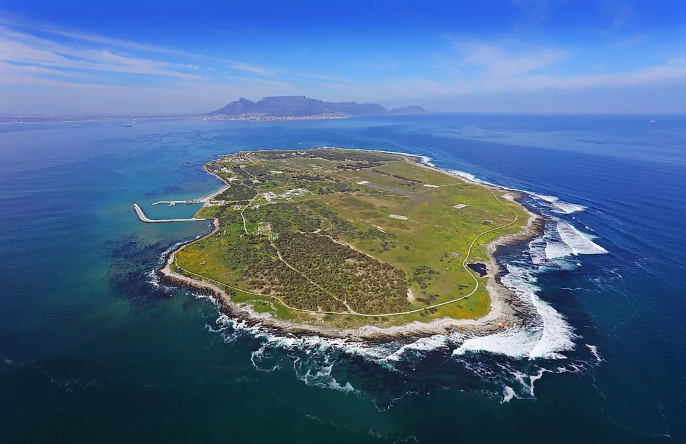
Robben Island Historical Tour
Delve into South Africa's history with a tour of Robben Island, a UNESCO World Heritage Site where Nelson Mandela was once imprisoned, and gain insights into the country's struggle for freedom.
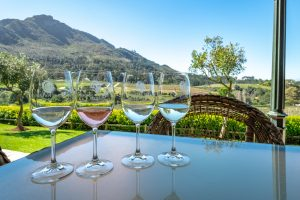
Wine Tasting in Constantia
Indulge your senses in the lush vineyards of Constantia, Cape Town's oldest wine-producing region. Enjoy wine tastings, cellar tours, and picturesque landscapes in this charming setting.
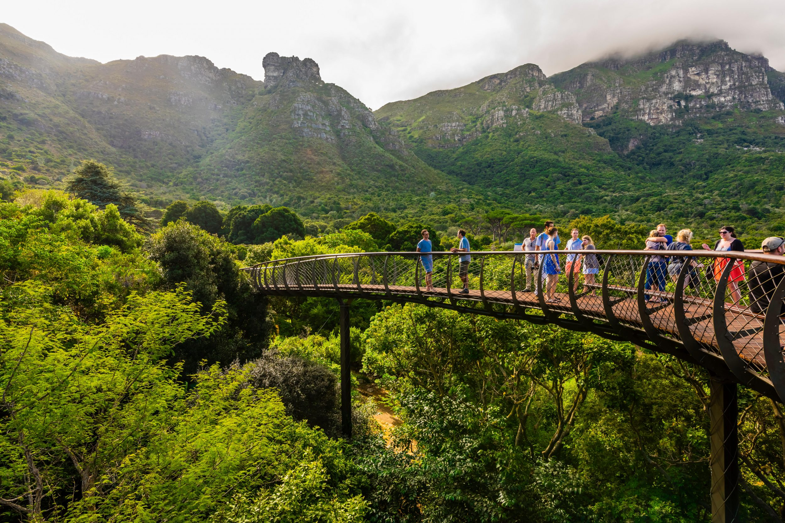